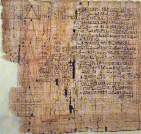
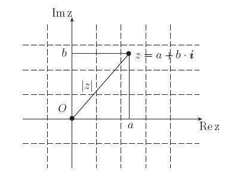
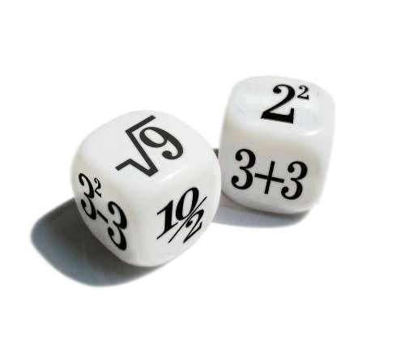
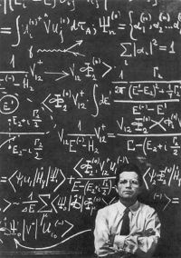
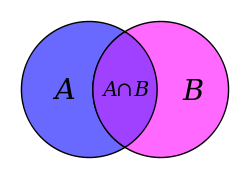

Теорема Пифагора
Теорема Пифагора
Одна из основополагающих теорем евклидовой геометрии, устанавливающая соотношение между сторонами прямоугольного треугольника: сумма квадратов длин катетов равна квадрату длины гипотенузы.

Папирус Ахмеса
Все задачи из папируса Ахмеса (записан ок. 1650 года до н. э.) имеют прикладной характер
и связаны с практикой строительства, размежеванием земельных наделов и т. п.
Задачи сгруппированы не по методам, а по тематике.
 Алгоритм Эвклида
Алгоритм Эвклида
Алгоритм Евклида — эффективный алгоритм для нахождения наибольшего общего делителя двух
целых чисел (или общей меры двух отрезков). В самом простом случае алгоритм
Евклида применяется к паре положительных целых чисел и формирует новую пару,
которая состоит из меньшего числа и разницы между большим и меньшим числом.
 Книга абака (Фибоначчи)
Книга абака (Фибоначчи)
Главный труд Фибоначчи (Леонардо Пизанского), посвященный изложению и пропаганде
десятичной арифметики.

Комплексные числа
Итальянский математик Никколо Фонтана Тартальей (1499 - 1557)
в первой половине 16 века получил выражение для корня такого уравнения через некоторые
параметры, для нахождения которых составляется система.

Теория вероятностей
Исследуя прогнозирование выигрыша в азартных играх, Блез Паскаль и Пьер Ферма
открыли первые вероятностные закономерности, возникающие при бросании костей.

Математический анализ
Публикация Лейбницом статьи "Новый метод максимумов и минимумов…".
Эта статья в сжатой и малодоступной форме излагала принципы нового метода,
названного дифференциальным исчислением.
Теория Галуа
Галуа заложил основы современной алгебры, вышел на такие фундаментальные понятия,
как группа и поле (конечные поля носят название полей Галуа).
 Математическая логика
Математическая логика
В работе «Формальная логика» (1847) де Морган описал понятие универсума и символы
для логических операторов, записал известные «законы де Моргана». Позже он ввёл
общее понятие математического отношения и операций над отношениями.

Теория множеств
Георг Кантор ввёл понятие произвольного числового множества, а затем и общее понятие
множества — самого абстрактного понятия в математике. С помощью взаимно-однозначных
отображений он ввёл понятие равномощности множеств, потом определил сравнение мощностей
на больше-меньше и, наконец, классифицировал множества по величине их мощности: конечные,
счётные, континуальные и т. д.